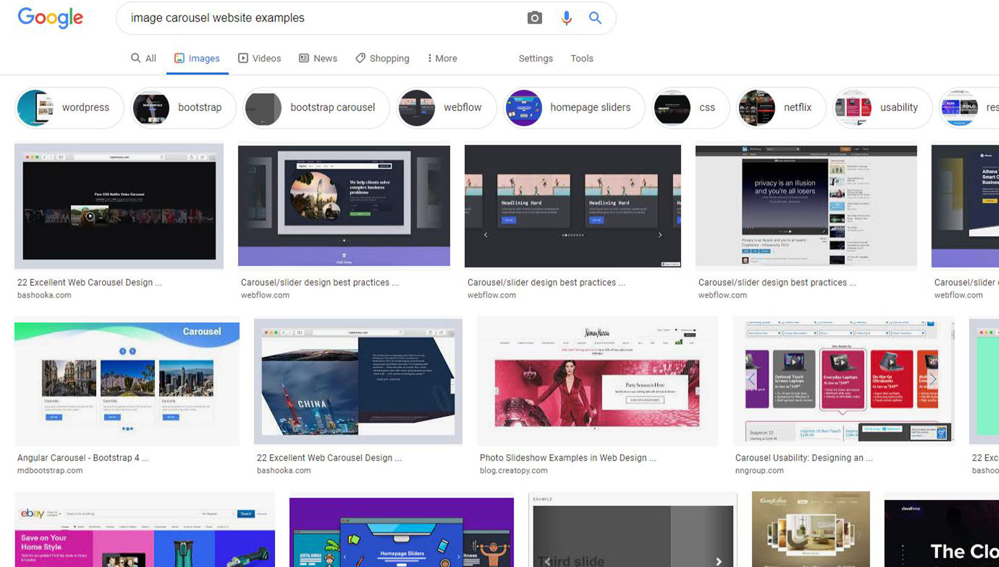
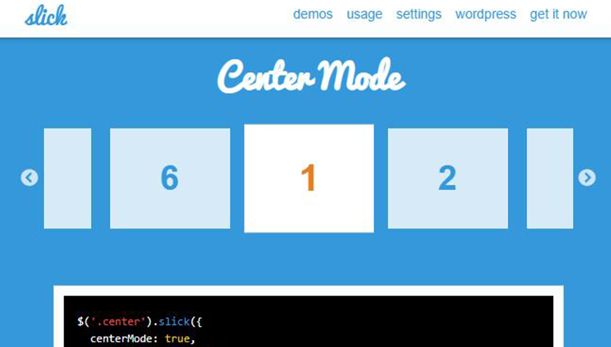
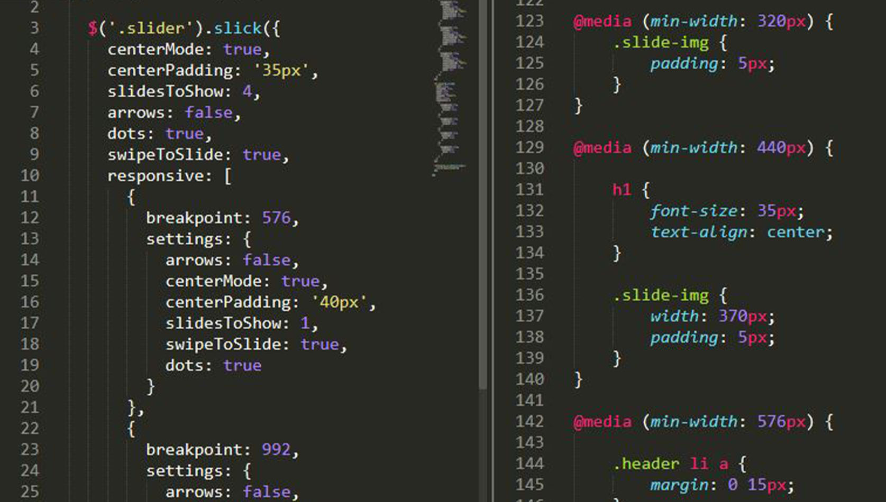

SDD Interior Design
Responsive Webpage with an Image Carousel
To create a responsive single web page using Slick Plugin, JavaScript, HTML, and CSS. Design the web page in a different layout according to a total of 5 breakpoints. Most importantly, Slick Plugin must be responsive to each breakpoint.
Technical Info:
HTML, CSS, JavaScript, JQuery (Slick), Adobe Photoshop
Source References:
- https://unsplash.com/
Unsplash
PROCESS
This project’s main goal is to use jQuery Plugin – Slick which creates a carousel to show various photos. Like many other websites, I placed a carouse in the first section as a banner. In the second section, there is another carousel for the text to deliver information.
01
Brainstorm (Find Contents)
I decided that having the same layout or the same type of Carousel will be not enough. Because there are lots of types of carousel Slick has. Also, I thought only using photos for the carousel will be boring. I planned to place an image carousel and text carousel with interior design resources. For the overall mood, which is very simple and clean, and text contents, I referred to yuandmedesign company only for those. I also re-sized thumbnail images on Adobe Photoshop to make them look consistent.
02
Research Slick Plugin
To fully understand, I searched Slick in GitHub and on Youtube to see how it’s used and what kind of features Slick has. Then I picked 2 types of carousel design to apply 2 types of contents to show that I understand how this Plugin works even in a responsive web design and the skill I can use jQuery Plugin effectively.
03
Responsive Web Design
Initially, I planned to have 5 breakpoints. 320px, 440px, 576px, 768px, 992px, 1200px. However, I added 888px as well to make it look smooth from 768px to 992px because main image in a carousel went little bit awkward.
The first section (Banner) - In a mobile version, there is only one main image in a carousel, and each image on both sides with low opacity and small dots to show users what image you are looking at and there are more images so they can swipe. Until 992px, 2 there are 2 images as a main then it changes to 3 from 992px and 4 from 1200px.
Second section and Navigation bar – in a mobile version, users swipe to see more information in the other 2 slides in the carousel, and in a bigger screen version (from 768px), there are arrows to move the previous and next slide. I also made a change to a navigation item in a desktop version, when users hover a navigation item, there’s a black box to show which one they try to choose.
